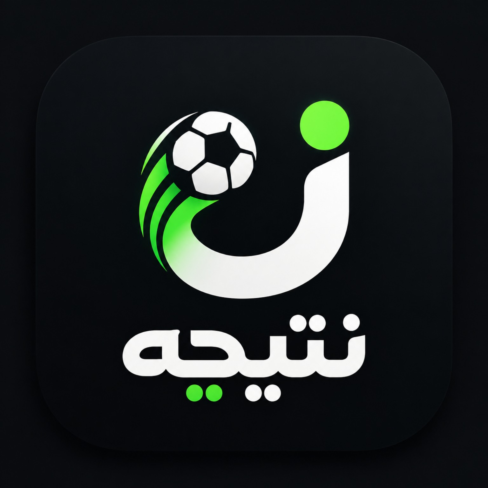
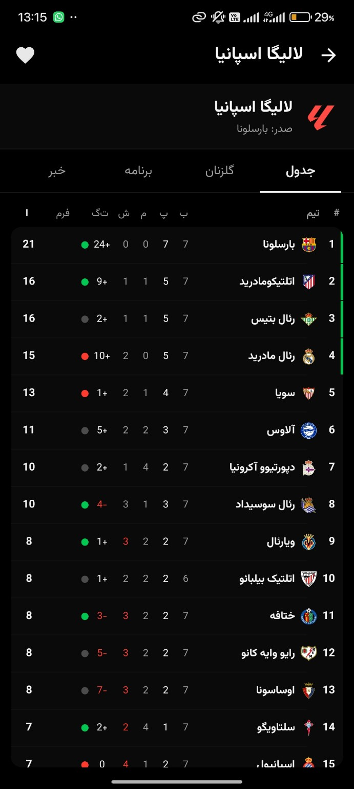
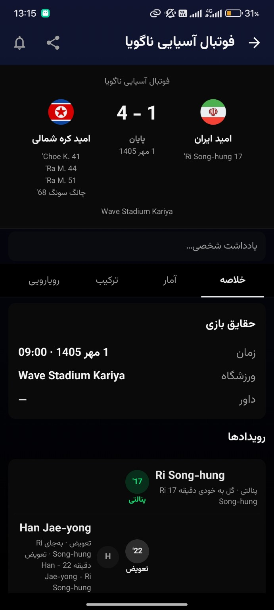

نتایج زنده و دقیق
امتیاز، زمان بازی و رخدادهای مهم مسابقه را همان لحظه دنبال کن.
پایان
۲—۱
تمام وقت

نتیجهاز نتیجه زنده و ترکیب تیمها تا جدول لیگ، جزئیات مسابقه و اعلان گل؛ «نتیجه» همهچیز را سریع، فارسی و بدون شلوغی در اختیارت میگذارد.


امتیاز، زمان بازی و رخدادهای مهم مسابقه را همان لحظه دنبال کن.
تمام وقت
ترکیب، جدول زمانی، مالکیت توپ و آمار کلیدی در یک صفحه خلوت.
تیمها، لیگها و بازیکنان محبوبت را انتخاب و سریعتر دنبال کن.
هیچ گل یا اتفاق مهمی را از دست نده؛ اعلانها کاملاً قابل تنظیماند.
رابط فارسی، راستچین و خوانا برای استفاده در تمام ساعتهای روز.
رتبه، امتیاز، فرم تیمها و تغییرات جدول را یکجا و مرتب ببین.
اطلاعات، افتخارات، مسابقات و وضعیت تیمها و بازیکنان محبوب را دنبال کن.
بازیهای مهم را روی صفحه اصلی ببین و مصرف اینترنت را کنترل کن.
پیش از شروع، زمان و ترکیب احتمالی را ببین؛ هنگام مسابقه رخدادها و آمار را دنبال کن؛ بعد از سوت پایان هم نتیجه، جدول و جزئیات کامل را مرور کن.
برای دیدن تصویر کامل، آن را انتخاب کن.
اگر پاسخ پرسشت اینجا نیست، از طریق پشتیبانی تلگرام با ما در ارتباط باش.
نتایج زنده فوتبال، جزئیات مسابقه، رخدادهای مهم، جدول لیگ، اطلاعات تیمها و بازیکنان، علاقهمندیها، اعلان گل، ویجت و حالت کاهش مصرف اینترنت در اختیار شماست.
بله، دانلود و استفاده از امکانات اصلی برنامه رایگان است و برای مشاهده نتایج نیازی به خرید اشتراک ندارید.
روی «دانلود مستقیم APK» بزنید، فایل را دانلود کنید و پس از پایان دانلود آن را باز کنید. اگر اندروید درخواست کرد، اجازه نصب از این منبع را فقط برای مرورگر خود فعال کنید.
بله، میتوانید تیمها، لیگها و بازیکنان محبوب را انتخاب کنید و اعلانهای مرتبط با گل و رخدادهای مهم را مدیریت کنید.
نسخه فعلی برای گوشیها و تبلتهای اندرویدی منتشر شده و رابط آن با اندازههای مختلف صفحه سازگار است.
ابتدا آخرین نسخه را از همین صفحه دریافت کنید. اگر مشکل ادامه داشت، از دکمه پشتیبانی تلگرام در پایین صفحه برای ارسال گزارش استفاده کنید.
علاقهمندیها و تنظیمات شخصی برای ساخت تجربه اختصاصی شما استفاده میشوند. برای امنیت بیشتر همیشه برنامه را از لینک رسمی همین صفحه نصب کنید.
نتیجه را رایگان نصب کن و فوتبال را لحظهبهلحظه دنبال کن.